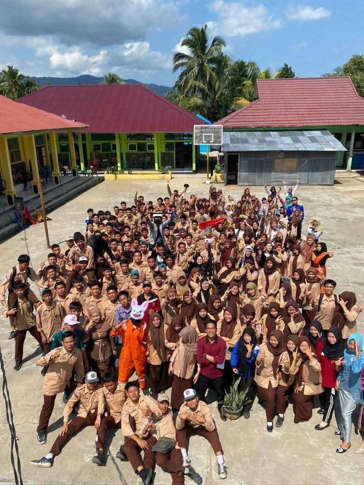

Selamat Datang di Website Resmi SMK Negeri 2 Lebong
SMKN 2 Lebong adalah sekolah menengah kejuruan negeri yang terletak di Tangua, Kecamatan Uram Jaya, Kabupaten Lebong. Kami menyediakan jurusan unggulan, kegiatan produktif, dan pembelajaran berorientasi kerja untuk menyiapkan lulusan yang siap masuk dunia kerja maupun melanjutkan ke jenjang pendidikan tinggi.
PPDB SMK Negeri 2 Lebong Tahun 2025 telah dibuka. Silakan buka menu PPDB untuk melihat alur pendaftaran, jurusan yang tersedia, persyaratan, dan formulir online.
Website ini juga menyajikan informasi tentang sambutan kepala sekolah, agenda kegiatan, galeri foto, serta kontak sekolah yang bisa dihubungi melalui WhatsApp atau email resmi.